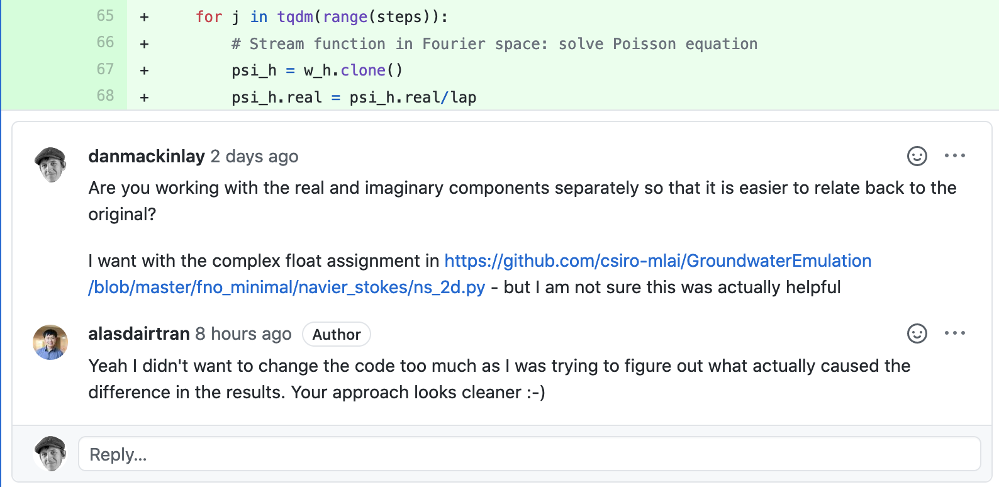
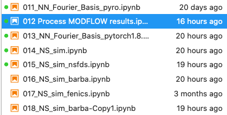

This is needed so that
This work is conducted in collaboration with Alasdair Tran at ANU CECs.

Currently we are investigating some alternative solvers to see which is least annoying.

If we had other workers on the project and we broadened the scope, could we put them to work?
IMO, yes. We could easily spend more hours on the most time-consuming parts of the project In (Dan’s) estimated priority order these would be
Alternatively, can we access labour from other sources?
Several people have expressed degrees of interest in the project. (Mahmood Aktar at IM&T, Xuhui Fan at MLAIFSP Context(?), Alasdair Tran at ANU CECS).